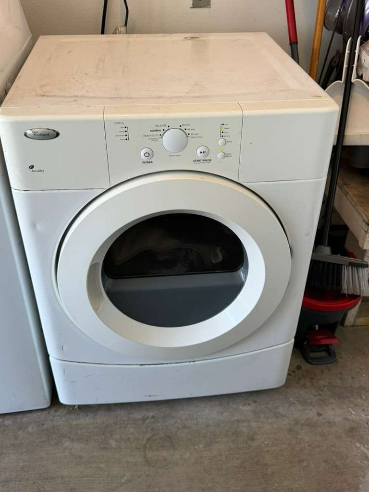
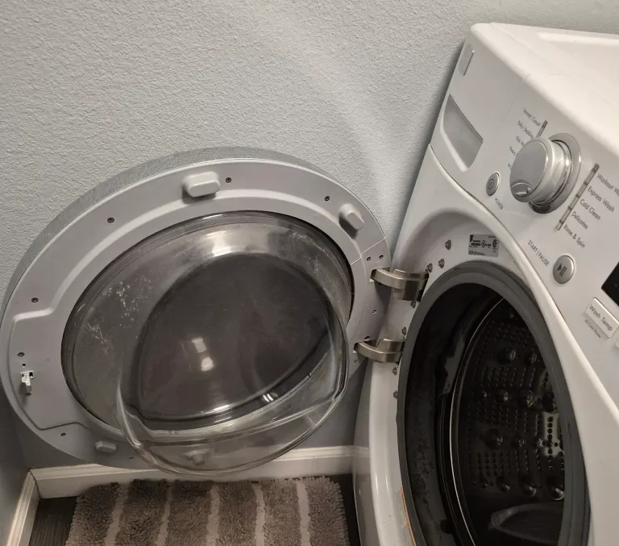
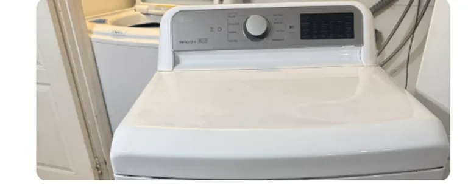

Appliance Repair in
Long Beach, CA
Serving all of Long Beach (ZIPs 90802–90815). Same-day appointments when the schedule is open. Licensed and insured.
Universal Appliances Repair Group Inc. serves Long Beach, CA, across residential ZIP codes 90802 through 90815, from Downtown, Alamitos Beach, Belmont Shore, and Naples to Bixby Knolls, Wrigley, Los Altos, and North Long Beach. We repair refrigerators, washers, dryers, dishwashers, ovens, stoves, freezers, garbage disposals, and wine coolers, and we service Whirlpool, LG, Samsung, GE, Viking, Sub-Zero, Wolf, Dacor, Thermador, and Miele. Orange County is our primary service area, and Long Beach sits right across the county line from our Seal Beach and Los Alamitos coverage. Same-day appointments are available when the schedule is open, and the $99 diagnostic fee is applied toward the repair. Call (949) 629-5365 or book online.
Recent Work in Long Beach
Real work completed at Long Beach addresses, photographed on the job.

Common Appliance Problems We Fix
We fix most of these in a single visit once the cause is confirmed. Here are the problems we diagnose and repair in Long Beach homes. For a fridge that has stopped cooling, start with our guide to the 5 most common causes of a refrigerator not cooling before you call.
Long Beach Neighborhoods We Serve
Long Beach is a major coastal city in southern Los Angeles County, running from the San Pedro Bay waterfront inland along the I-710 and I-405 corridors. The city covers about 11 residential ZIP codes; ZIPs 90801 and 90809 are post-office box designations only. We serve every residential neighborhood, from the high-rises of Downtown to the waterfront homes of Naples and Belmont Shore, with no travel surcharges for any Long Beach address.
Brands We Service in Long Beach
We work on everyday Whirlpool and LG machines and on built-in Sub-Zero and Viking units alike, across every Long Beach neighborhood.
Listing a brand here means we repair it, not that we are factory-authorized for it. If the manufacturer's warranty still covers your appliance, check with the manufacturer before you book.
Services We Offer in Long Beach
Each link below opens the full service page for that appliance, with the brands we cover and the faults we run into most.
What We Fix Most in Long Beach
Refrigerator repair
A refrigerator that runs but will not cool usually comes down to a condenser or evaporator fan, a defrost fault that has iced over the coils, a failed start relay, or, less often, a sealed-system problem. The diagnostic visit tells you which one it is and what the part costs before anything is replaced. If you want to rule out the simple causes first, read our guide to a refrigerator not cooling in Long Beach, or see the full refrigerator repair page.
Washer repair
Washers that will not drain, will not spin, or leave water on the floor most often have a blocked or failed drain pump, a worn door lock or lid switch, or a leaking hose or inlet valve. We repair front-load and top-load machines from Whirlpool, LG, Samsung, Maytag, and other brands. More detail is on our washer repair page.
Dryer repair
When a dryer tumbles but stays cold, the usual suspects are the heating element or thermal fuse on an electric model, and the igniter or gas valve coils on a gas model. A clogged vent can cause the same symptom and wear out those parts, so we check airflow as part of the diagnosis. The Whirlpool dryer in our recent work above came to us with exactly that no-heat complaint. See the dryer repair page for more.
Dishwasher repair
Standing water after a cycle, dishes that come out dirty, or a leak at the door usually point to a drain pump or filter problem, a failed wash motor, or a worn door gasket. We service built-in and standard dishwashers from Bosch, Whirlpool, KitchenAid, Samsung, LG, and more. Our dishwasher repair page covers the common faults.
How It Works
What happens after you call.
About Long Beach
Long Beach is the second-largest city in Los Angeles County, home to about 450,000 people. The Queen Mary, docked here since 1967, and the Aquarium of the Pacific, open downtown since 1998, are its best-known landmarks, and the Port of Long Beach is one of the busiest container ports in the country. The city also takes in the canals of Naples Island, the beach neighborhood of Belmont Shore, Long Beach Airport (LGB), and the Cal State Long Beach campus, and it completely surrounds the small, separate city of Signal Hill. Across the San Gabriel River and the county line, Long Beach borders Orange County, where we also serve neighboring Seal Beach and Los Alamitos.
What Our Customers Say
From our 149 verified 5-star Google reviews
"Great service! He was on time, clean, neat, and very professional. He did a great job repairing my fridge and I would definitely recommend him."

"Excellent service! The technician received the part and came to fix my washer immediately. He was professional, knowledgeable and kind. Fair pricing and great communication throughout the process. Highly recommend!"

"Not only was he able to come same day but his quality of service was exceptional and very reasonably priced"
Long Beach Repair Pricing
Every visit starts with a flat $99 diagnostic, which comes off the repair bill if you go ahead. Typical Long Beach repairs run $150–$400; sealed-system work and built-in luxury units cost more.
FAQ: Long Beach Appliance Repair
Need Appliance Repair in Long Beach?
Same-day appointments across Long Beach (ZIPs 90802–90815) when the schedule is open. Licensed technicians, 90-day parts / 30-day labor warranty on every repair.